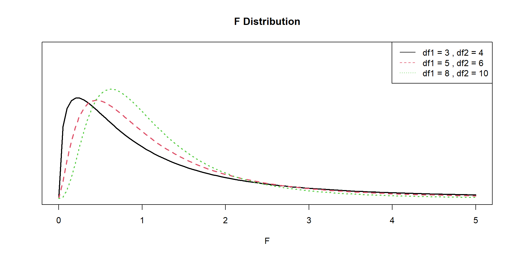

Response data \(y_{ij}\) from observation \(i=1\ldots n\) belonging to group \(j=1,2, \ldots J\)
The random error terms \(\epsilon_{ij}\) are independently and identically distributed (iid) as normal with mean zero and common variance.
Look familiar? T-test is a special case of ANOVA.
Hypothesis specification
The null hypothesis is that there is no difference in the mean of the quantitative variable across groups (categorical variable), while the alternative is that there is a difference.
\(H_0\): The mean outcome is the same across all groups. \(\mu_1 = \mu_2 = \cdots = \mu_j\)
\(H_A\): At least one mean is different.
Multiple Comparison
Why not multiple T-tests between all pairs of groups?
Each time you conduct a test, you risk coming to the wrong conclusion.
Repeated tests compound that chance of being wrong.
Set a Type 1 error rate of \(\alpha = .05\) (significant results due to randomness)
Conduct 10 analyses on the same data, but on different subsets.
Chance of making an error on any one test: .05
Chance of NOT making an error on any one test: .95
Chance of NOT making an error on ALL 10 tests: \(.95^{10} = .6\)
–> 40% chance of making a Type 1 error on at least one test.
Visual Comparison
Compare groups I, II, and III. Can you visually determine if the differences in the group centers is due to chance or not? What about groups IV, V, and VI?
Side-by-side dot plot for the outcomes for six groups.
Analysis of Variance
The total amount of variation in our quantitative outcome can be broken into two parts:
Total Variation = Between Group Variation (model) + Within Group Variation (residual)
The portion of the variance in the outcome that is explained by the groups (model)
The portion that’s leftover due to unexplained randomness (residual)
By looking at a ratio of these variance portions, we can determine if the variation observed is due to the groups, or random chance.
Sum of Squares
Variation is measured using the Sum of Squares (SS): The sum of the squares within a group (SSE), the sum of squares between groups (SSG), and the total sum of squares (SST).
SSE (Within group): Measures the variation of each observation around its group mean.
Analysis of Variance Table
The results are typically summarized in an ANOVA table.
Source
SS
df
MS
F
Groups
SSG
\(I-1\)
MSG = \(\frac{SSG}{I-1}\)
\(\frac{MSG}{MSE}\)
Error
SSE
\(N-I\)
MSE = \(\frac{MSE}{N-I}\)
Total
SST
\(N-1\)
The value in the F column is the test statistic, and has a F distribution with degrees of freedom (df) dependent on the number of groups (I-1), and the number of observations (N-I).
The F-distribution
The \(p\)-value is the area to the right of the F statistic density curve. This is always to the right because the F-distribution is truncated at 0 and skewed right. This is true regardless of the \(df\).
Show the code
df1 <-c(3, 5, 8)df2 <-c(4, 6, 10)plot(NULL, xlim =c(0, 5), ylim =c(0, 1), xlab =expression(F), ylab="", main ="F Distribution", axes=FALSE)axis(2, labels =FALSE, tick =FALSE)axis(1); box()for (i in1:3) {curve(df(x, df1[i], df2[i]), from =0, to =5, col = i, add =TRUE, lty = i, lwd=2)}legend("topright", legend =paste("df1 =", df1, ", df2 =", df2), col =1:3, lty =1:3)

Assumptions
Generally we must check three conditions on the data before performing ANOVA:
The observations are independent within and across groups
The distribution of flipper length varies across the species, with Gentoo having the largest flippers on average at 217.2mm compared to Adelie (190mm) and Chinstrap (195.8mm). The distributions are normally distributed with very similar spreads, Chinstrap has the most variable flipper length with a SD of 7.1 compared to 6.5 for the other two species.
3. Write the null and research hypothesis in words and symbols.
Null Hypothesis: There is no association between flipper length and species.
Alternate Hypothesis: There is an association between flipper length and species.
Let \(\mu_{A}, \mu_{C}\) and \(\mu_{G}\) be the average flipper length for the Adelie, Chinstrap and Gentoo species of penguins respectively.
\(H_{0}: \mu_{A} = \mu_{C} = \mu_{G}\)
\(H_{A}:\) At least one \(\mu_{j}\) is different.
4. State and justify the analysis model. Check assumptions.
We are comparing means from multiple groups, so an ANOVA is the appropriate procedure. We need to check for independence, approximate normality and approximately equal variances across groups.
Independence: We are assuming that each penguin was sampled independently of each other, and that the species themselves are independent of each other.
Normality: The distributions of flipper length within each group are fairly normal
Equal variances: Both the standard deviation and IQR (as measures of variability) are very similar across all groups.
5. Conduct the test and make a decision about the plausibility of the alternative hypothesis.
Df Sum Sq Mean Sq F value Pr(>F)
species 2 52473 26237 594.8 <2e-16 ***
Residuals 339 14953 44
---
Signif. codes: 0 '***' 0.001 '**' 0.01 '*' 0.05 '.' 0.1 ' ' 1
2 observations deleted due to missingness
The pvalue is very small, so there is evidence to support \(H_{a}\): at least one mean is different.
6. Write a conclusion in context of the problem. Include the point estimates, confidence interval for the difference and p-value.
There is sufficient evidence to believe that the average flipper length is significantly different between the Adelie, Chinstrap and Gentoo species of penguins (p<.0001).
Multiple / Post-Hoc comparisons: Which group is different?
Only appropriate if your ANOVA is significant.
The overall ANOVA can be significant and NOT have any significant differences when you look at the post hoc results. The reason is that the two analyses ask two different questions.
The ANOVA is testing the overall pattern of the data and asking if as a whole the explanatory variable has a relationship (or lack thereof) with the response variable.
The post hoc is asking if one level of the explanatory variable is significantly different than another for the response variable. The post hoc is not as sensitive to differences as the ANOVA.
The family-wise error rate of\(\alpha\) is maintained
Differences in group means can be non-significant at the post hoc level, but significant at the ANOVA level.
Tukey multiple comparisons of means
95% family-wise confidence level
Fit: aov(formula = flipper_length_mm ~ species, data = pen)
$species
diff lwr upr p adj
Chinstrap-Adelie 5.869887 3.586583 8.153191 0
Gentoo-Adelie 27.233349 25.334376 29.132323 0
Gentoo-Chinstrap 21.363462 19.000841 23.726084 0
The results of the Tukey HSD post-hoc test indicate that the average flipper length in mm is significantly different between all pairs of penguin species at the 5% significance level. Chinstrap has an average flipper length 5.87mm(3.59-8.15) larger than Adelie, whereas Gentoo has an average flipper length 27.23mm(25.33-29.13) larger than Adelie.
Coefficient of Determination \(R^{2} = \frac{SSG}{SST}\)
Df Sum Sq Mean Sq F value Pr(>F)
species 2 52473 26237 594.8 <2e-16 ***
Residuals 339 14953 44
---
Signif. codes: 0 '***' 0.001 '**' 0.01 '*' 0.05 '.' 0.1 ' ' 1
2 observations deleted due to missingness
52473/(52473+14953)*100
[1] 77.82309
The coefficient of determination is interpreted as the % of the variation seen in the outcome that is due to subject level variation within each of the treatment groups. The strength of this measure can be thought of in a similar manner as the correlation coefficient \(\rho\), \(<.3\) indicates a poor fit, \(<.5\) indicates a medium fit, and \(>.7\) indicates a good fit.
77.8% of the variation in flipper length can be explained by the species of penguin
Non-parametric tests
Many stat tests rely on assumptions that ensure the sample estimate can be modeled with a normal distribution.
What do you do if your assumptions aren’t met?
We can “relax” some of those assumptions and perform a more robust, but less powerful test.
less power means you need more data to draw a conclusion with the same amount of confidence.
No detailed examples will be provided in these notes. You tend to learn/use these on an “as-needed” basis.
Kruskal-Wallis
The Kruskal-Wallis test is the most common non-parametric method for testing whether or not groups of observations come from the same overall distribution.
By comparing the medians instead of the means, we can remove the normality assumption on the residuals.
Null hypothesis is now that the medians of all groups are equal vs at least one population median is different.
K-W and all pairwise Wilcox Tests
Show the code
kruskal.test(flipper_length_mm ~ species, data = pen)
Kruskal-Wallis rank sum test
data: flipper_length_mm by species
Kruskal-Wallis chi-squared = 244.89, df = 2, p-value < 2.2e-16
Pairwise comparisons using Wilcoxon rank sum test with continuity correction
data: pen$flipper_length_mm and pen$species
Adelie Chinstrap
Chinstrap 3e-08 -
Gentoo <2e-16 <2e-16
P value adjustment method: holm
In this case, the non-parametric tests come to the same conclusion as the parametric ones. If there is a discrepency, go with the non-parametric test since it has fewer assumptions.